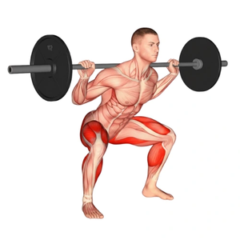

Sentadilla orientada a la fuerza potencia
Te interesa situ objetivo es mejorar explosividad y velocidad de carrera.
No todo es hacer sentadilla con barra
Especialista en readaptación de lesiones de rodilla
Como todos sabemos, la sentadilla es un patrón fundamental en nuestro día a día. Al sentarnos en una silla, al agacharnos al suelo a coger algo, al ponernos de cuclillas... y está perfecto querer entrenarla, y desarrollar un elevado nivel de fuerza en ella.
Ahora bien, cuando la gente piensa en sentadillas, piensa en la típica sentadilla con barra de toda la vida...

Y aunque es buena opción, no es la única variante de sentadilla que existe. No siempre tienes que hacerla con el rango completo, y a 3 series de 12. A eso me refiero...
Las puedes hacer con diferentes objetivos, como ganar más rango de movilidad, desarrollar la fuerza potencia... entre otras
Aquí tienes 3 variantes que te van a ayudar a cambiar el enfoque, y explorar opciones que quizás nunca habías planteado, en base al punto en el que te encuentres de tu lesión (eso ya tendrás que valorarlo tú).
Te interesa situ objetivo es mejorar explosividad y velocidad de carrera.
Te interesa siquieres aumentar tu fuerza en general en este movimiento.
Te interesa site encuentras en un punto «inicial» de tu lesión o tras una cirugía.
Como ves, cada una tiene un objetivo, y todas realmente son el mismo patrón de movimiento. No todo es hacer sentadilla 3x12, como te decía.
Si después de leer esta mini guía te surgen dudas sobre tu caso concreto o sientes que tu rodilla no está progresando como debería, no te quedes con la incertidumbre.
Cada rodilla y cada proceso es distinto, y muchas veces pequeños ajustes marcan una gran diferencia.
Puedes escribirme sin compromiso y ver juntos si lo que te ocurre entra dentro de lo normal o si hay algo que convendría ajustar.
Escríbeme sin compromiso